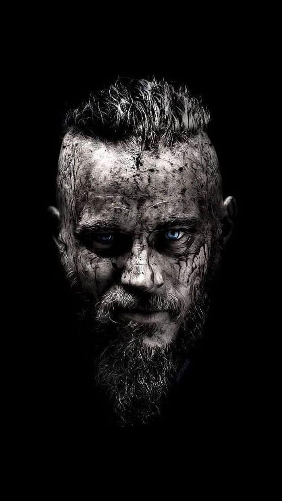

|  | Ragnar LothbrokKing of the Viking's Conquest I am the Vikings' King of Norway and a Farmer. The norse who conquered the west. |
Ragnar Lothbrok, Ragnar also spelled Regner or Regnar, Lothbrok also spelled Lodbrog or Lodbrok, Old Norse Ragnarr Loðbrók, (flourished 9th century), Viking whose life passed into legend in medieval European literature.
Ragnar’s story is told mainly through unreliable sagas, stories steeped in legend and myth with few facts confirmed by reliable sources; Scandinavia in this period was illiterate so there are very few historical records to support or negate these illustrious claims. Two sources from the twelfth century provide the most information about Ragnar; the Gesta Danorum recorded by Danish Historian Saxo Grammaticus and Krakumal, an Icelandic poem that is a romantic rendition of Ragnar’s death. Ragnar’s and his sons’ exploits are recorded in the Orkney Island’s poem Hattalykill.
Halfdan, (flourished 9th century), founder of the Danish kingdom of York (875/876), supposedly the son of Ragnar Lothbrok, the most famous Viking of the 9th century.
Ivar the Boneless, Old Scan dinavian Ivar inn beinlausi, Ivar also spelled Ivarr, Inguar, or Inwaer, (died 873, Dublin [Ireland]), Viking chieftain, of Danish origin, whose life story is suffused with legend. He is best known for his exploits on the British Isles, most notably his invasion, in the company of two brothers, of several Anglo-Saxon kingdoms. Unlike previous Viking raiders who came only to plunder, Ivar sought conquest.
Ubba (Old Norse: Ubbi; died 878) was a 9th-century Viking and one of the commanders of the Great Heathen Army that invaded Anglo-Saxon England in the 860s.[note 1] The Great Army appears to have been a coalition of warbands drawn from Scandinavia, Ireland, the Irish Sea region and Continental Europe. There is reason to suspect that a proportion of the Viking forces specifically originated in Frisia, where some Viking commanders are known to have held fiefdoms on behalf of the Franks.
| Date | Description |
|---|---|
| 793 AD | The Lindisfarne raid. The raiding of the monasteries in Lindisfarne marks the first Viking invasion of Britain. |
| 794 AD | The Vikings raid Scotland and Ireland for the first time. |
| 865 AD | The Great Viking Army invade England from Denmark. |
| 866 AD | The Vikings capture the city of York (known as Jorvik). |
| Armored Joints | ⭐ | Healing Herb | ⭐⭐⭐⭐⭐ |
| Unyielding | ⭐⭐ | Fresh Recruits | ⭐⭐⭐⭐ |
| Hidden Wrath | ⭐⭐⭐ | Armored Joints | ⭐⭐⭐ |
| Lord of War | ⭐⭐⭐⭐ | Armed to the Teeth | ⭐⭐ |
| Effortless | ⭐⭐⭐⭐⭐ | Armored to the Teeth | ⭐ |